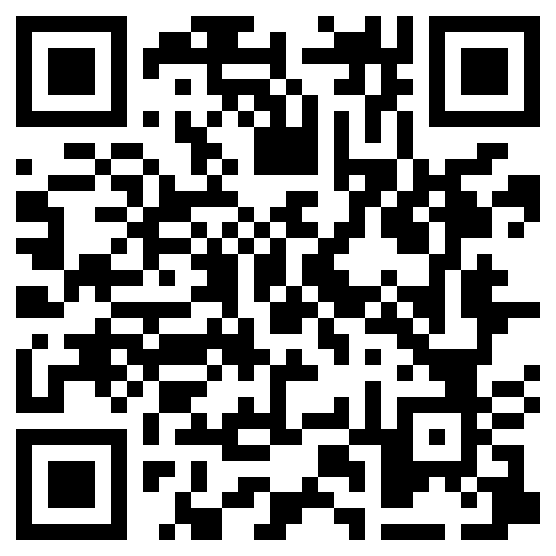
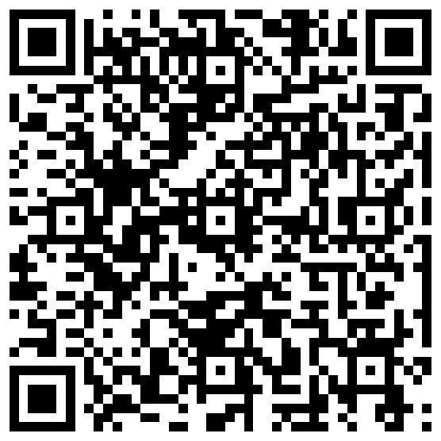
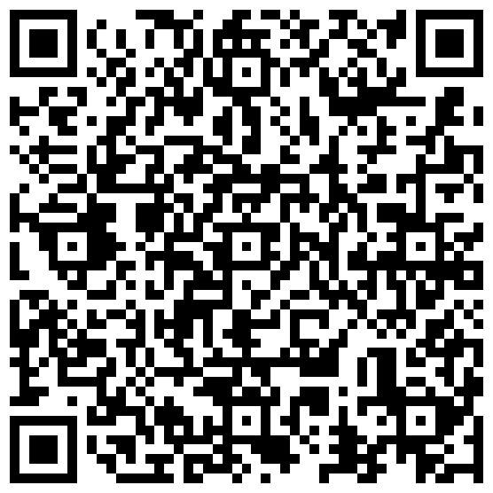
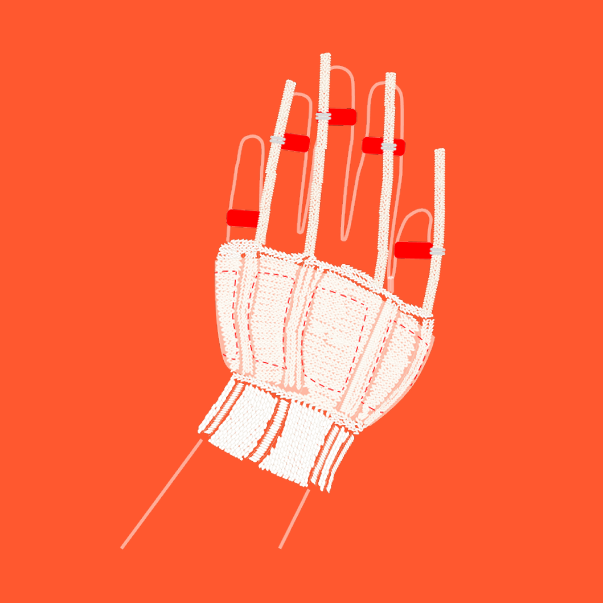

Stroke Imprint
Imagine if, during moments of heightened anxiety, you could once
again feel the gentle, familiar touch of a loved one’s hand.
Stroke Imprint is a knitted wearable that simulates stroking
sensations to comfort young women experiencing anxiety through
pressure sens- ing and SMA-based actuation. Paired with a
digital interface, the glove allows users to record personalized
tactile sensation. Through user interviews, design iterations,
and user testing, the study demon- strates the its potential as
an anxiety tracking, therapeutic, wearable within a closed
biofeedback loop.
GoFundMe
Poster
Paper
Teach your glove strokes that comfort you
